Abril
Diada de Sant Jordi
Paradeta al carrer Ferran Puig amb productes de l'entitat i
activitats culturals.
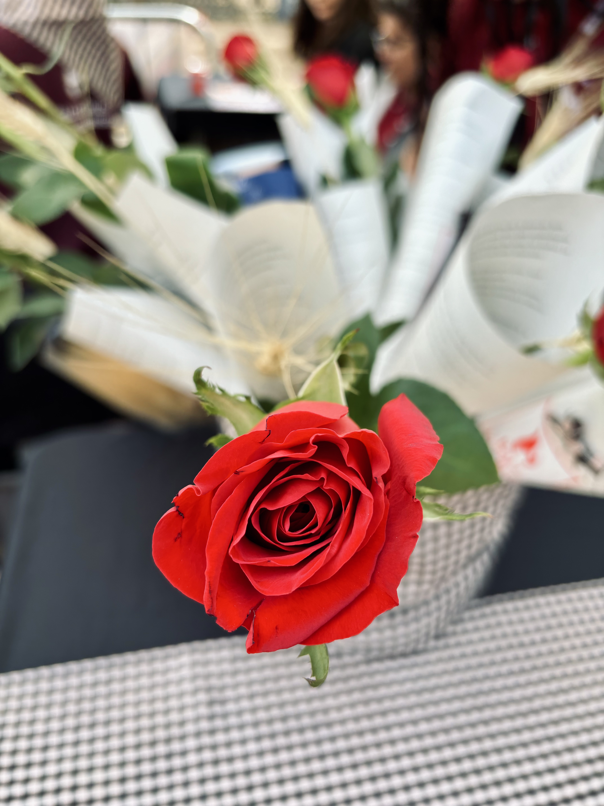
Som un Ball de Diables creat l'estiu del 2017 que segueix el model tradicional del món dels diables. Busquem fomentar la participació activa del públic i la cultura catalana arreu del territori.
Els nostres fonaments es basen en el model tradicional: percussió amb tambors de membrana de pell, vestuari uniforme amb espardenyes d'espart i la implicació directa amb la població del Prat de Llobregat.
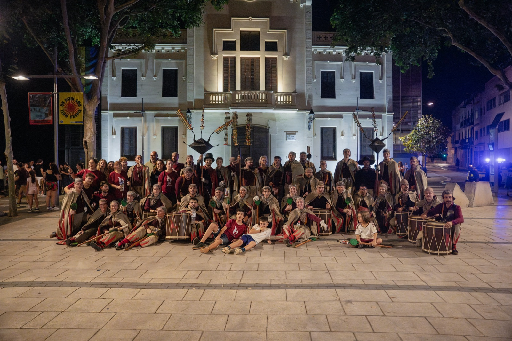

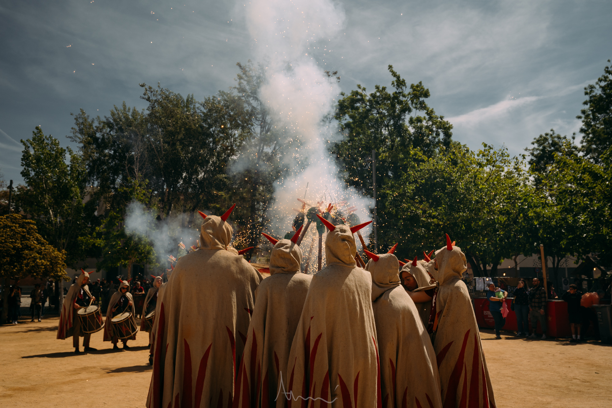
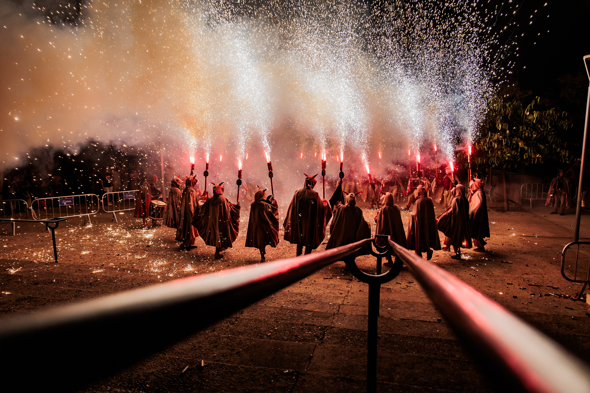
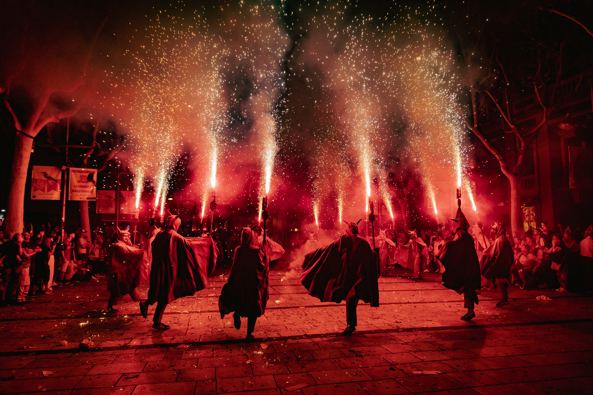
| Data | Localitat |
|---|---|
| Agost 2019 | Sant Antoni de Vilamajor |
| Maig 2022 | Masquefa |
| Setembre 2023 | Miranda de Ebro |
| Setembre 2024 | Esplugues de Llobregat |
| Maig 2025 | Badalona |
| Juny 2025 | Granollers |
| Octubre 2025 | Roquetes del Garraf |
| Octubre 2025 | Barcelona / Presentació de la Xarxa de Balls de Diables de Catalunya |
| Gener 2026 | Vila-seca |
| Febrer 2026 | Mil·lenari de Montserrat |
| Octubre 2026 | Sabadell |
| Novembre 2026 | Cornellà |
| Gener 2027 | ... |
Aquest any canviem la panera per La Grossa de Cap d'Any. Compra la teva participació de 5 € i juga amb el Ball. Si la Grossa toca un dels nostres números, són 10.000 € per participació!
Més informacióEls moments del Ball de Diables del Prat!
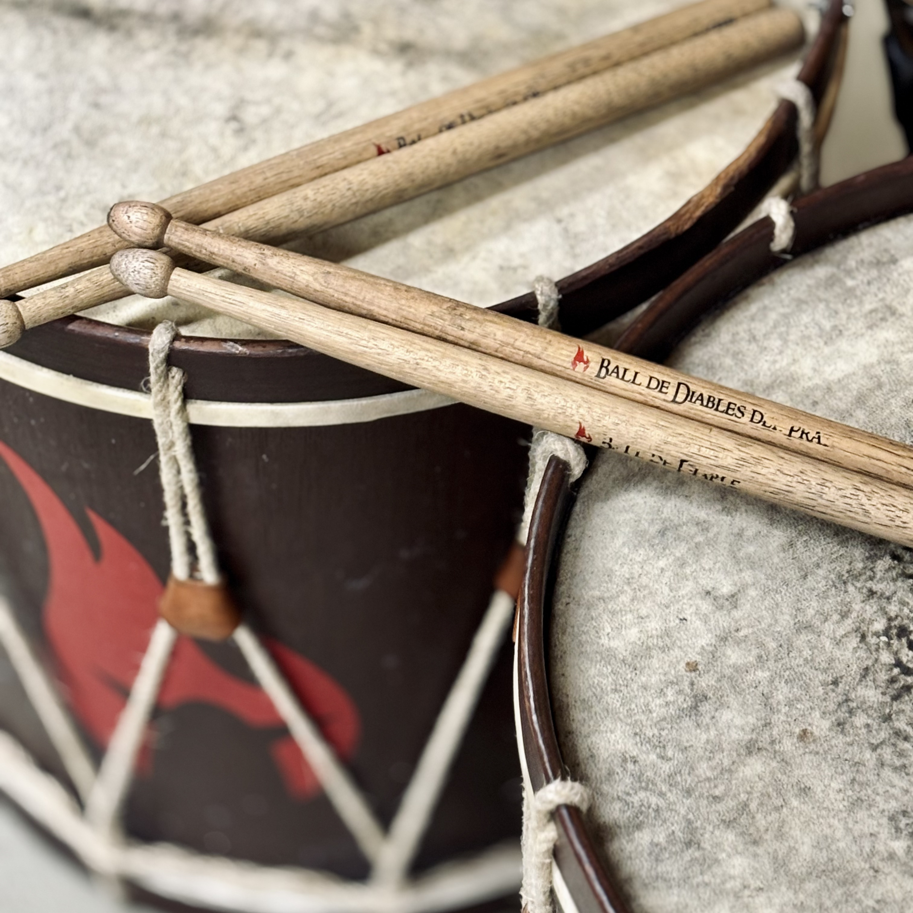
Els tocs de tabal tradicionals, enregistrats per preservar-los i compartir-los!
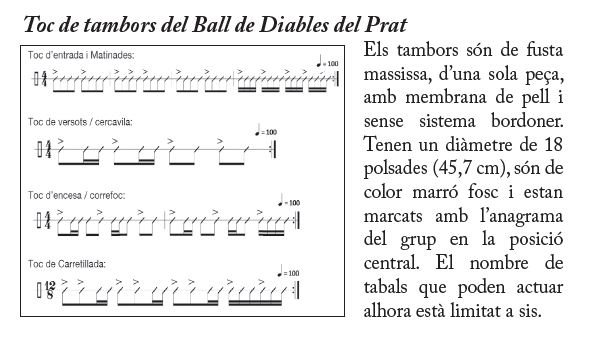
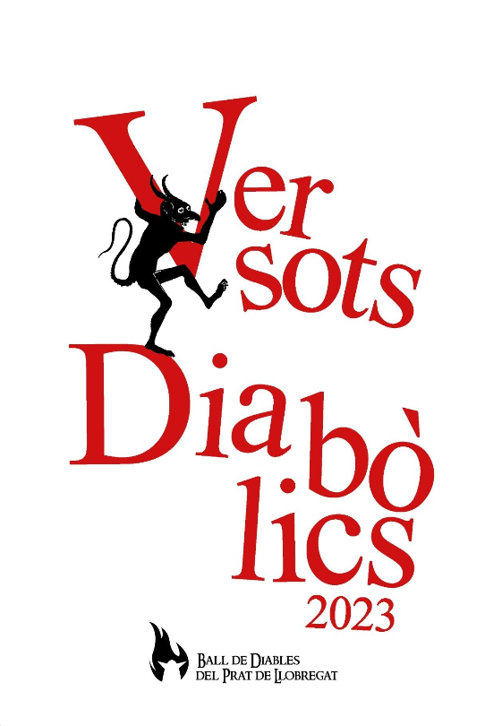
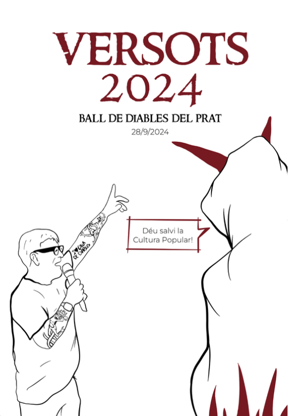
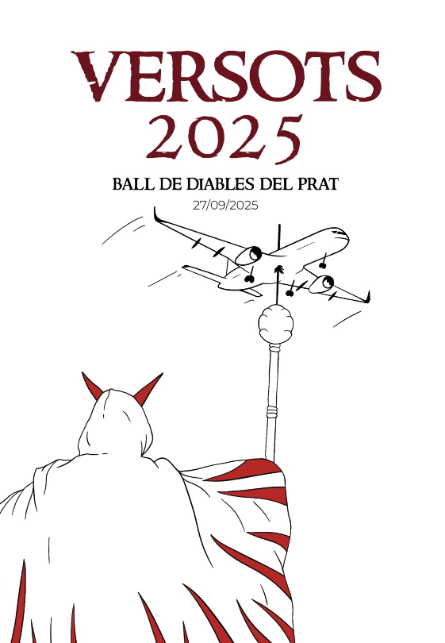
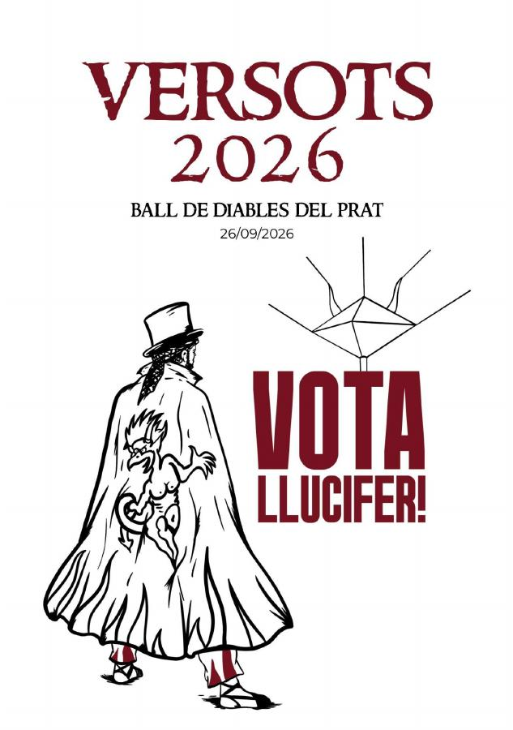
Carregant PDF...
Per a qualsevol consulta, proposta de col·laboració o si vols formar part del Ball de Diables del Prat.
Correu: balldediablesdelprat@gmail.com